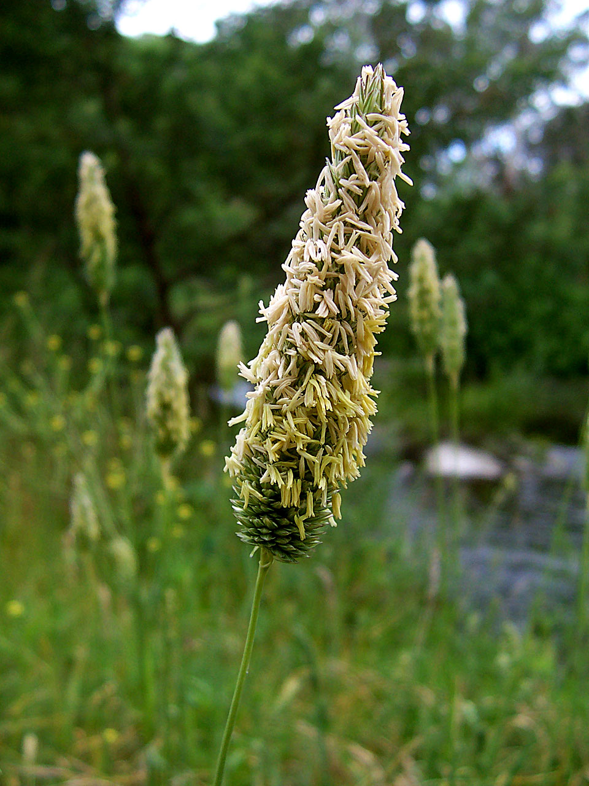
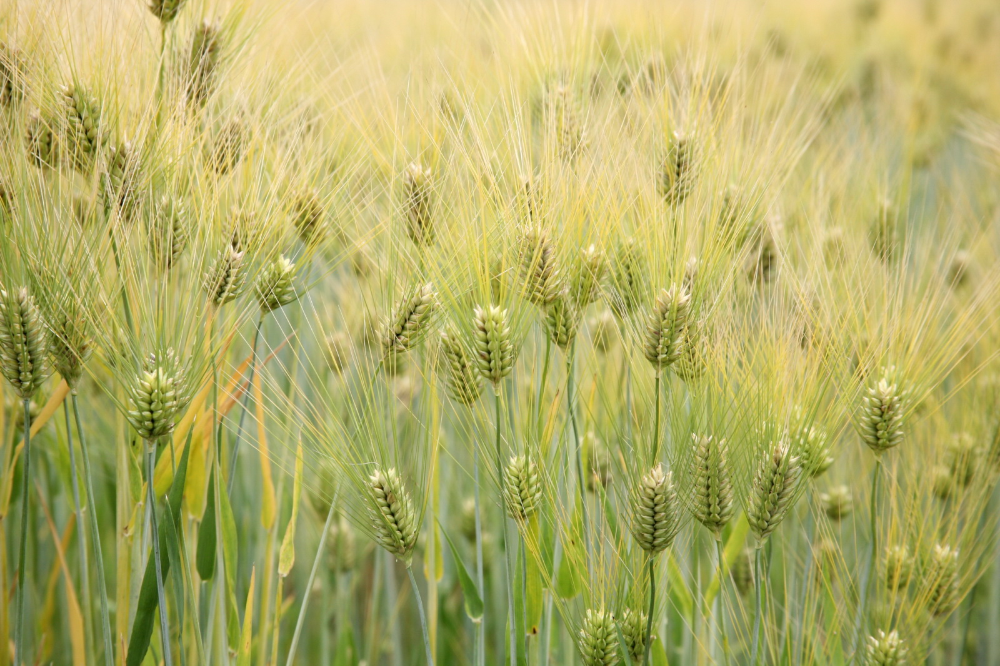
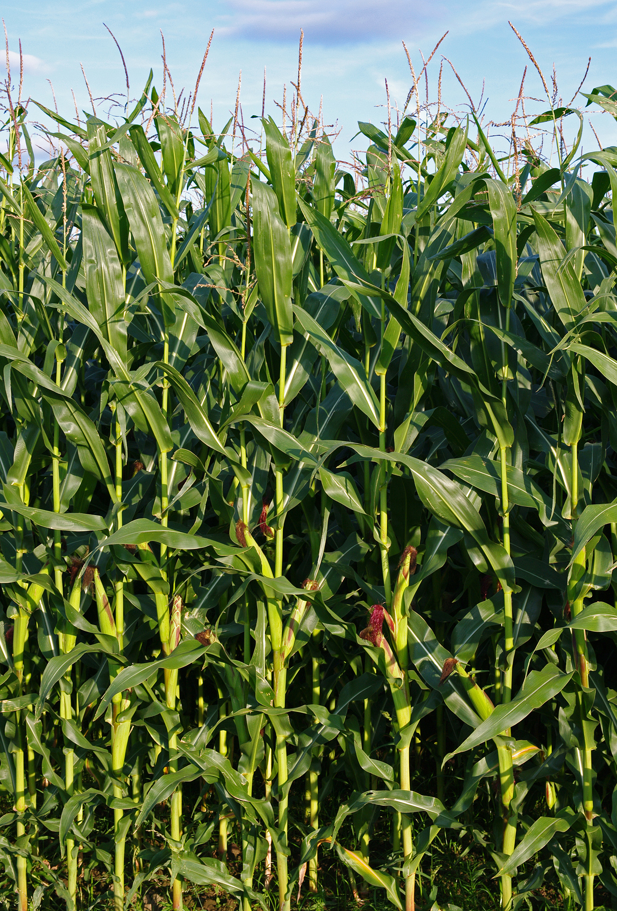

Poaceae
grass family
|  Alopecurus pratensis (foxtail) from Wikimedia Commons by Fir0002, CC BY-SA 3.0 |
Phyllostachys edulis (mōsō bamboo) from Wikimedia Commons by ShotaNino - Own work, CC0 |
 Oryza sativa (rice) from Wikimedia Commons by Augustus Binu, CC BY-SA 3.0 |
 Hordeum vulgare (barley) from Wikimedia Commons by Cliff, CC BY 2.0 |
{kind=link}
{kind=link}
{kind=link}
botanical characteristics
Botany in a Day, p. 207-9 | "Poaceae", Wikipedia
- growth form
- herbs, occasionaly large and woody (e.g., bamboos)
- stems/leaves
- hollow flower stems (called culms) except at knee-like nodes/joints
- leaves nearly always alternate
- parallel veins
- each leaf is differentiated into a lower sheath hugging the stem and a blade with entire margins
- flowers
- flowers lack showy petals and sepals
- flowers contained by bracts (that become the chaff that is winnowed when harvesting grain)
- arranged in spikelets
- reproductive structures
- typically 3 (rarely, 2 or 6) stamems
- ovary consists of 3 united carpels
- matures as a single seed called a caryopsis (grain), or rarely an achene or berry
distribution
"Poaceae", Wikipedia
- around 780 genera and around 12000 species
- one of the most widely distributed and abundant groups of plants on Earth
- found on every continent, including Antarctica
- the Antarctic hair grass, Deschampsia antarctica is one of only two flowering plant species native to the western Antarctic Peninsula
ecological roles
"Poaceae", Wikipedia
- grasses are the dominant vegetation in many habitats, including grassland, salt-marsh, reedswamp and steppes
- they also occur as a smaller part of the vegetation in almost every other terrestrial habitat
- if only large, contiguous areas of grasslands are counted, these biomes cover 31% of the planet's land
- grasses provide food to many grazing mammals, as well as to many species of butterflies and moths
- many types of animals eat grass as their main source of food, and are called graminivores – these include cattle, sheep, horses, rabbits and many invertebrates, such as grasshoppers and the caterpillars of many brown butterflies
- grasses are also eaten by omnivorous or even occasionally by primarily carnivorous animals
- grasses are unusual in that the meristem is near the bottom of the plant; hence, grasses can quickly recover from cropping at the top
- the evolution of large grazing animals in the Cenozoic contributed to the spread of grasses
- without large grazers, fire-cleared areas are quickly colonized by grasses, and with enough rain, tree seedlings, but trees eventually outcompete most grasses
- trampling grazers kill seedling trees but not grasses
common pharmacological constituents
"Poaceae", Wikipedia
- the smell of freshly cut grass is produced mainly by cis-3-Hexenal
"Angiosperm families - Gramineae Juss."
- accumulated starch other than exclusively ‘pteridophyte type’; cyanogenic, or not cyanogenic; cynogenic constituents tyrosine-derived; alkaloids present (sometimes, isoquinoline, pyrrolizidine and indole), or absent; arbutin absent; saponins/sapogenins present (rarely), or absent; proanthocyanidins present (rarely, only in Panicoideae and Chloridoideae, and there in only trace amounts), or absent; when present, cyanidin; flavonols present (only in Glyceria and Melica), or absent (60 genera); when present, quercetin, or kaempferol and quercetin; ellagic acid absent; plants accumulating free oxalates (e.g. Setaria anceps), or not accumulating free oxalates; sieve-tube plastids P-type; type II (b)
patterns in medicinal actions
- nutritive, soothing
- resilience, reliability, structure, matrix, grounds, canvas
- connection to scent via the scent of cut grass - nostalgia?
traditional/cultural uses
"Poaceae", Wikipedia
- grasses are, in human terms, perhaps the most economically important plant family
- food production
- of all crops grown, 70% are grasses; three cereals (rice, wheat, and maize) provide more than half of all calories consumed by humans.
- sugarcane is the major source of sugar production
- bamboo shoots are used in numerous Asian dishes and broths, and are available in supermarkets in various sliced forms, in both fresh, fermented and canned versions
- lemongrass is a grass used as a culinary herb for its citrus-like flavor and scent
- many species of grass are grown as pasture for foraging or as fodder for prescribed livestock feeds, particularly in the case of cattle, horses, and sheep
- industrial uses
- Grasses are used as raw material for a multitude of purposes, including construction, in the composition of building materials, for insulation, in the manufacture of paper and board such as oriented structural straw board
- grass fiber can be used for making paper, biofuel production, nonwoven fabrics, and as replacement for glass fibers used in reinforced plastics
- bamboo scaffolding is able to withstand typhoon-force winds that would break steel scaffolding
- larger bamboos and Arundo donax have stout culms that can be used in a manner similar to timber, Arundo is used to make reeds for woodwind instruments, and bamboo is used for innumerable implements
- Phragmites australis (common reed) is important for thatching and wall construction of homes in Africa
- grasses are used in water treatment systems, in wetland conservation and land reclamation, and used to lessen the erosional impact of urban storm water runoff
- grasses are the primary plants used in lawns; grass lawns are an important covering of playing surfaces in many sports, including football (soccer), American football, tennis, golf, cricket, softball and baseball
- the primary ingredient of beer is usually barley or wheat, each of which has been used for this purpose for over 4000 years
warnings
Botany in a Day, p. 207-9
- be sure to inspect the seeds of all grasses for the presence of ergot fungus (Claviceps purpurea or C. paspali) before harvesting
- C. purpurea restricts blood flow to the extremities with long-term consumption, which can lead to gangrene
- C. paspali affects the nervous system, causing trembling, staggering, and paranoia
- ergot poisoning may also stimulate uterine contractions and abortions
- ergot contains an alkaloid used in the synthesis of LSD, and a derivative of ergot is used as medicine for migraine and cluster headaches
- ergot consumes the grass seeds and forms a black/purplish powder
extra information
prominent genera
- Agropyron (incl. rice grass, needle grass)
- Arundo (incl. giant reed)
- Avena (oats)
- Bambusa (bamboos)
- Cenchrus (millets)
- Cymbopogon (lemongrasses)
- Hierochloe (sweetgrasses)
- Hordeum (barleys)
- Lolium (rye grasses)
- Oryza (rices)
- Phragmites (incl. common reed)
- Poa (bluegrasses)
- Saccharum (sugar canes)
- Secale (ryes)
- Sorghum (sorghums)
- Triticum (wheats)
- Zea (corns/maizes)
- Zizania (wild rices)
plant highlights
see list of materia medica entries here
Zea mays
|  from Wikimedia Commons by Christian Fischer, CC BY-SA 3.0 |
common names: maize, corn en español: maíz, choclo |
{kind=link}
description
"Maize", Wikipedia
- long narrow leaves arise from the nodes or joints, alternately on opposite sides on the stalk
- monoecious, with separate male and female flowers on the same plant
- at the top of the stem is the tassel, an inflorescence of male flowers; their anthers release pollen, which is dispersed by wind
- the female inflorescence, some way down the stem from the tassel, is first seen as a silk, a bundle of soft tubular hairs, one for the carpel in each female flower, which develops into a kernel when it is pollinated
- a whole female inflorescence develops into an ear or corncob, enveloped by multiple leafy layers or husks
- the grains are usually yellow or white in modern varieties; other varieties have orange, red, brown, blue, purple, or black grains
distribution
"Maize", Wikipedia
- domesticated by indigenous peoples in southern Mexico about 9000 years ago from wild teosinte
- Balsas teosinte, Zea mays subsp. parviglumis, is native to the Balsas River valley in Mexico's southwestern highlands, and is identified as the crop wild relative genetically most similar to modern maize
- widely cultivated throughout the world
- listed as 'Least Concern' on the IUCN Red List of Threatened Species
medicinal/magical uses
The Modern Herbal Dispensatory, p. 218
- demulcent, diuretic, soothing, cooling, slightly drying
- useful for kidney inflammation and relieving discomfort associated with urinary tract conditions such as inflamed bladder and painful urination
The New Age Herbalist p. 61
- soothing diuretic; an important herb for urinary tract infections
- helps the passage of urinary stones
- increases the output of bile
- used by some herbalists to lower blood pressure
preparation methods
The Modern Herbal Dispensatory, p. 218
- infusion
- tincture
- powder
warnings
The Modern Herbal Dispensatory, p. 218
- no known warnings
sources
"Angiosperm families - Gramineae Juss." on DELTA - DEscription Language for TAxonomy. Retrieved 1 September 2025.
Easely, Thomas and Steven Horne. The Modern Herbal Dispensatory (2016)
Elpel, Thomas J. Botany in a Day: The Patterns Method of Plant Identification (2021)
Goldberg Blackthorn, Samantha. Ace of Cups Herbal Medicine and Botanical Magic Herbal School (2024)
Mabey, Richard et al. The New Age Herbalist (1988)
"Maize" on Wikipedia. Retrieved 1 September 2025.
"Poaceae" on Wikipedia. Retrieved 1 September 2025.